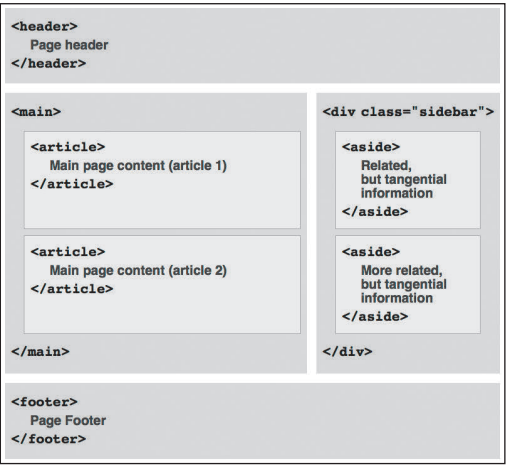
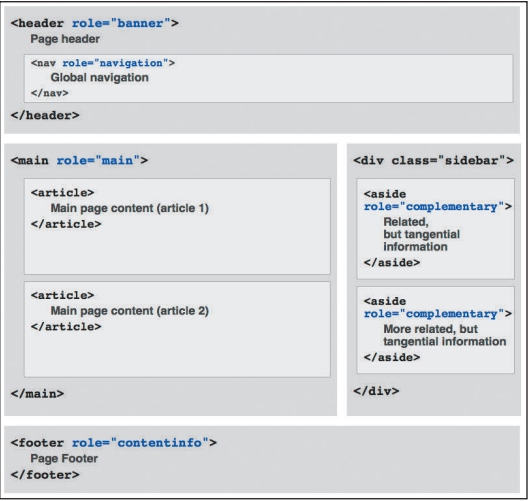

Barcelona's➝ Architect
... [文章的其余内容] ...➝ La Sagrada Família
... [图像和段落] ...Park Guell
... [另一个图像和段落] ... 地表角色
需要澄清的是，即便不使用 ARIA 地标角色，页面看起来也没有任何差别，但是使用它们可以提升使用辅助设备的用户的体验。出于这个理由，推荐使用它们。
1、什么是HTML语义化？
<基本上都是围绕着几个主要的标签，像标题（H1~H6）、列表（li）、强调（strong em）等等>
根据内容的结构化（内容语义化），选择合适的标签（代码语义化）便于开发者阅读和写出更优雅的代码的同时让浏览器的爬虫和机器很好地解析。
2、为什么要语义化？
为了在没有CSS的情况下，页面也能呈现出很好地内容结构、代码结构:为了裸奔时好看；
用户体验：例如title、alt用于解释名词或解释图片信息、label标签的活用；
有利于SEO：和搜索引擎建立良好沟通，有助于爬虫抓取更多的有效信息：爬虫依赖于标签来确定上下文和各个关键字的权重；
方便其他设备解析（如屏幕阅读器、盲人阅读器、移动设备）以意义的方式来渲染网页；
便于团队开发和维护，语义化更具可读性，是下一步吧网页的重要动向，遵循W3C标准的团队都遵循这个标准，可以减少差异化。
3、写HTML代码时应注意什么？
尽可能少的使用无语义的标签div和span；
在语义不明显时，既可以使用div或者p时，尽量用p, 因为p在默认情况下有上下间距，对兼容特殊终端有利；
不要使用纯样式标签，如：b、font、u等，改用css设置。
需要强调的文本，可以包含在strong或者em标签中（浏览器预设样式，能用CSS指定就不用他们），strong默认样式是加粗（不要用b），em是斜体（不用i）；
使用表格时，标题要用caption，表头用thead，主体部分用tbody包围，尾部用tfoot包围。表头和一般单元格要区分开，表头用th，单元格用td；
表单域要用fieldset标签包起来，并用legend标签说明表单的用途；
每个input标签对应的说明文本都需要使用label标签，并且通过为input设置id属性，在lable标签中设置for=someld来让说明文本和相对应的input关联起来。